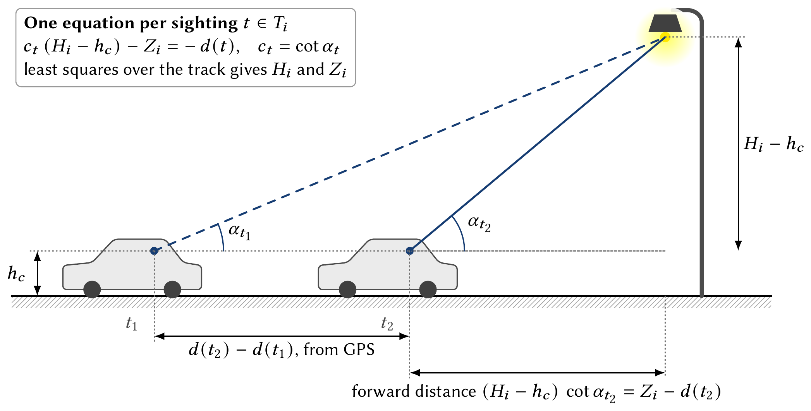
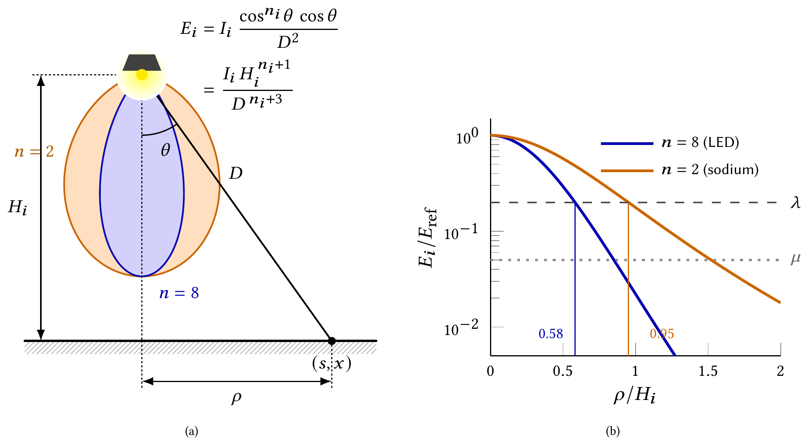
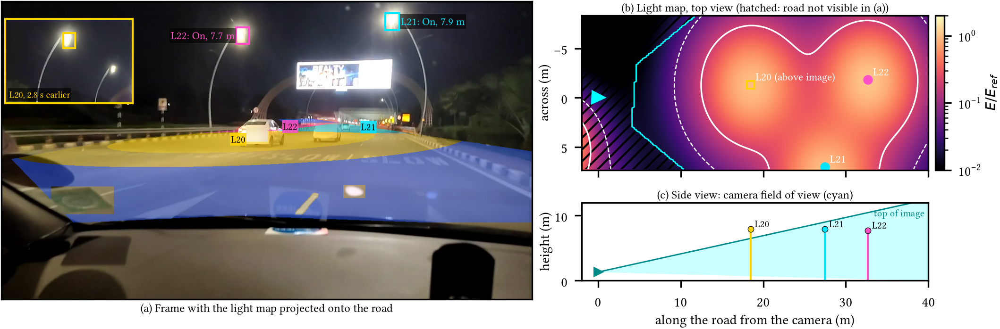
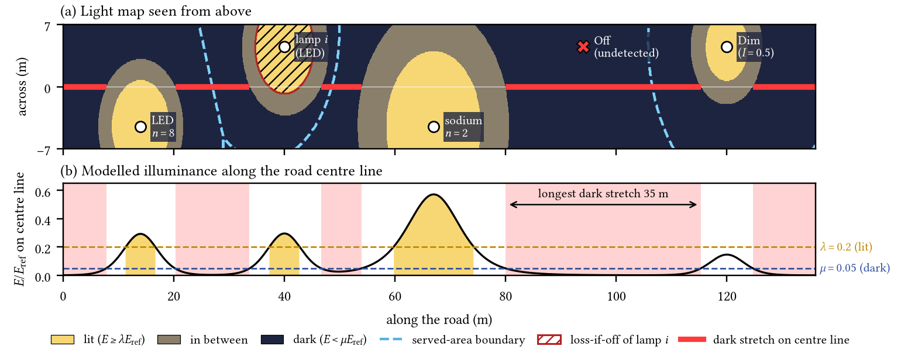
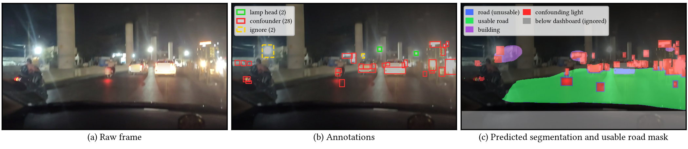
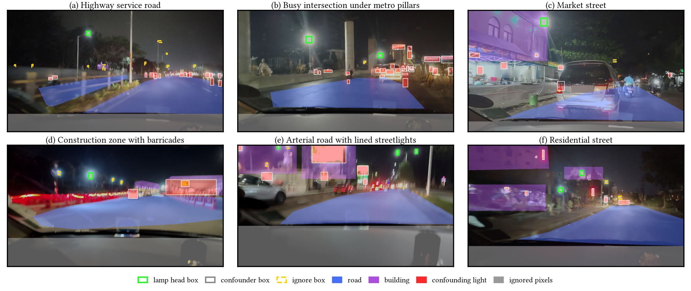
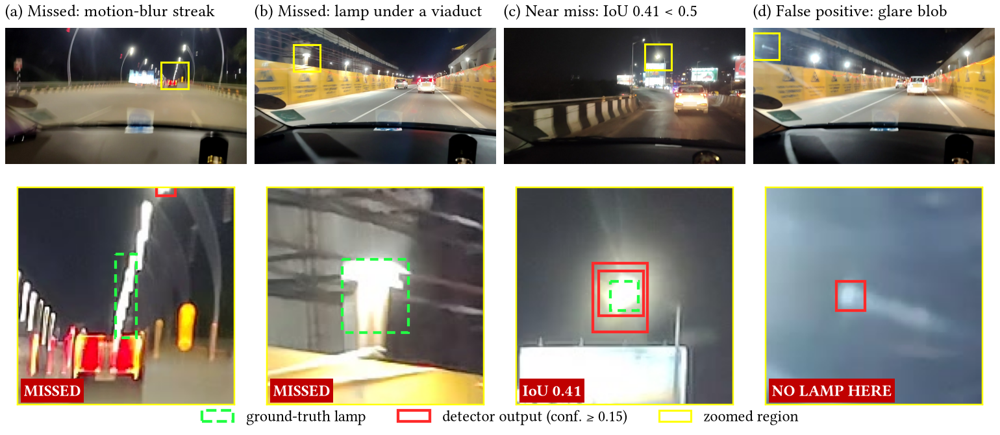

StreetLightIQ: A Mobile Sensing System for City-Scale Streetlight Monitoring and Roadway Illumination Estimation
Abstract
Public street lighting is essential for urban safety and mobility, making regular measurement of streetlight operation and estimation of useful illumination critical to urban infrastructure management. However, existing monitoring approaches often rely on manual inspections or costly infrastructure retrofits to determine streetlight functionality, without adequately evaluating their contribution to roadway and public space illumination. To address this gap, we present StreetLightIQ (SLIQ): an end-to-end edge-cloud system that leverages commodity smartphones mounted on moving vehicles for automated streetlight monitoring and illumination estimation. SLIQ addresses challenges posed by small streetlight targets, visual confounders, and heterogeneous nighttime conditions through an integrated pipeline combining a lightweight detector (trained through knowledge distillation and optimized using INT8 quantization) with temporal tracking, operational-state classification, and semantic segmentation. A physics-based model further reconstructs streetlight geometry and estimates relative roadway illumination without calibrated lux measurements, thereby obtaining per-lamp and street-level illumination metrics, including illumination coverage and failure criticality rankings. We evaluate SLIQ using nighttime drives across diverse urban road segments. The on-device detector achieves 0.78 mAP@50, compared to 0.81 for its larger teacher model, while operational-state classification and semantic segmentation attain 85.6% accuracy and 0.607 mIoU, respectively. Across 80 streets, criticality of failure rankings achieve a median Spearman correlation of 0.94, with the top-ranked lamp among the three most critical in 98% of the cases. On known lamp layouts embedded in real drives, lamp heights and positions are recovered with median errors of 0.35 m and 1.25 m, and the model-lit share of each street follows the true share (Spearman correlation = 0.93, median error = 0.013).
From a single camera to lamp geometry


Light maps and lamp-level metrics


Dataset
We annotated 2,091 nighttime frames from six recordings covering highway, flyover, market and intersection scenes: 2,528 lamp-head boxes, 25,279 confounding-light boxes, 12,458 ignore regions and 5,737 road and building polygons, plus a separately recorded 285-frame test recording. Faces and number plates are blurred. The dataset is available on request.


Results
| On-device detector (INT8), held-out test | 0.78 mAP@50 (teacher: 0.81) |
| Detector latency on a commodity phone | 377.5 ms mean; 1.3–1.5 fps end to end |
| Lamp state (On / Dim / Off) | 85.6% accuracy |
| Scene segmentation | 0.607 mIoU |
| Failure-criticality ranking, 80 streets | median Spearman 0.94; top lamp in top 3 in 98% of streets |
| Lamp height / position, known layouts | median error 0.35 m / 1.25 m |
| Lit share of each street, known layouts | Spearman 0.93, median error 0.013 |

BibTeX
@misc{sliq2026,
title = {StreetLightIQ: A Mobile Sensing System for City-Scale Streetlight Monitoring and Roadway Illumination Estimation},
author = {Anonymous},
year = {2026},
note = {Under review}
}